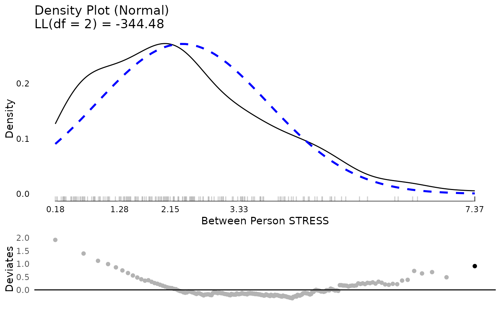
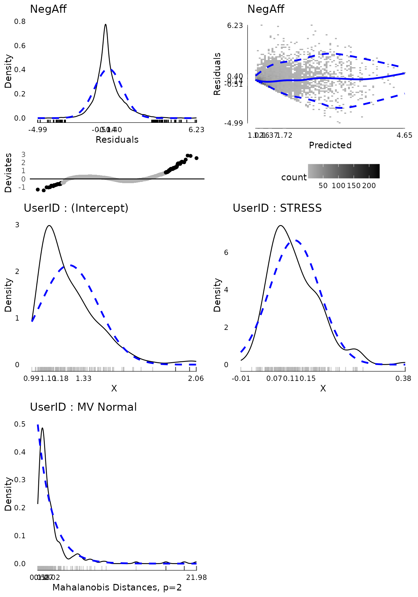
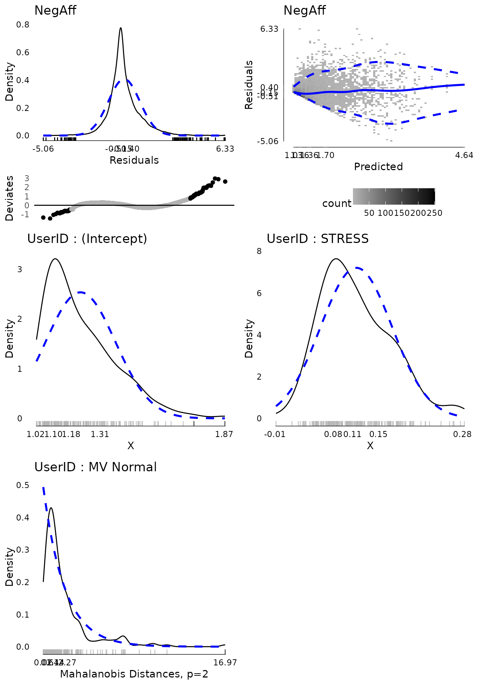
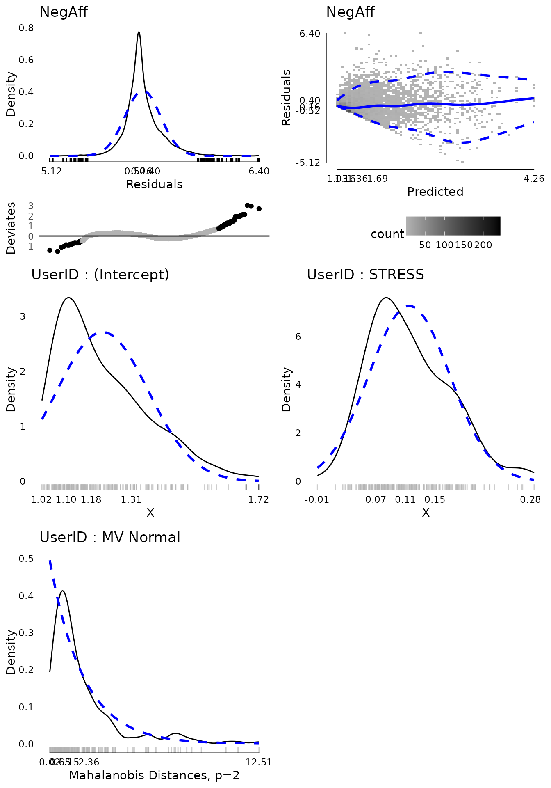

Multilevel Models using lmer
Joshua F. Wiley
2025-04-04
Source:vignettes/lmer-vignette.Rmd
lmer-vignette.RmdThis vignette shows how to use the multilevelTools
package for further diagnostics and testing of mixed effects (a.k.a.,
multilevel) models using lmer() from the lme4
package.
To get started, load the lme4 package, which actually
fits the models, and the multilevelTools package. Although
not required, we load the lmerTest package to get
approximate degrees of freedom for use in calculating p-values for the
fixed effects. Without lmerTest p-values are based on
asymptotic normality. We will also load an example dataset from the
JWileymisc package, aces_daily, using the
data() function. The aces_daily dataset is
simulated data from a daily, ecological momentary assessment study of
191 participants who completed ratings of activity,
coping, emotions, and
stress (aces) up to three times per day for twelve
days. Only a subset of variables were simulated, but it is a nice
example of messy, real-world type data for mixed effects or multilevel
models.
## load lme4, JWileymisc, and multilevelTools packages
## (i.e., "open the 'apps' ")
library(lme4)
#> Loading required package: Matrix
library(lmerTest)
#>
#> Attaching package: 'lmerTest'
#> The following object is masked from 'package:lme4':
#>
#> lmer
#> The following object is masked from 'package:stats':
#>
#> step
library(extraoperators)
library(JWileymisc)
library(multilevelTools)
library(data.table)
## load some sample data for examples
data(aces_daily, package = "JWileymisc")A Quick View of the Data
Let’s start with a quick view of the structure of the data.
## overall structure
str(aces_daily, nchar.max = 30)
#> 'data.frame': 6599 obs. of 19 variables:
#> $ UserID : int 1 1 1 1 1 1 1 1 1 1 ...
#> $ SurveyDay : Date, format: "2017-02-24" "2017-02-24" ...
#> $ SurveyInteger : int 2 3 1 2 3 1 2 3 1 2 ...
#> $ SurveyStartTimec11: num 1.93e-01 4.86e-| __truncated__ ...
#> $ Female : int 0 0 0 0 0 0 0 0 0 0 ...
#> $ Age : num 21 21 21 21 21 21 21 21 21 21 ...
#> $ BornAUS : int 0 0 0 0 0 0 0 0 0 0 ...
#> $ SES_1 : num 5 5 5 5 5 5 5 5 5 5 ...
#> $ EDU : int 0 0 0 0 0 0 0 0 0 0 ...
#> $ SOLs : num NA 0 NA NA 6.92 ...
#> $ WASONs : num NA 0 NA NA 0 NA NA 1 NA NA ...
#> $ STRESS : num 5 1 1 2 0 0 3 1 0 3 ...
#> $ SUPPORT : num NA 7.02 NA NA 6.15 ...
#> $ PosAff : num 1.52 1.51 1.56 1.56 1.13 ...
#> $ NegAff : num 1.67 1 NA 1.36 1 ...
#> $ COPEPrb : num NA 2.26 NA NA NA ...
#> $ COPEPrc : num NA 2.38 NA NA NA ...
#> $ COPEExp : num NA 2.41 NA NA 2.03 ...
#> $ COPEDis : num NA 2.18 NA NA NA ...For this example, we will just work with negative affect,
NegAff, as the outcome variable and stress,
STRESS, as our predictor. Because observations are repeated
per person, we also need to use a variable that indicates which
observations belong to which person, UserID. The code that
follows shows how many unique people and observations we have for each
variable.
## how many unique IDs (people) are there?
length(unique(aces_daily$UserID))
#> [1] 191
## how many not missing observations of negative affect are there?
sum(!is.na(aces_daily$NegAff))
#> [1] 6389
## how many not missing observations of stress are there?
sum(!is.na(aces_daily$STRESS))
#> [1] 6402Finally, we might explore each variable briefly, before jumping into
analyzing them and examining diagnostics and effects of our models.
Using the summary() function on each variable gives us some
basic descriptive statistics in the form of a five number summary
(minimum, first quartile, median (second quartile), third quartile, and
maximum) as well as the arithmetic mean. The NA’s tell us how many
observations are missing negative affect. We can see that both variables
are quite skewed as their minimum, first quartile and medians are all
close together and far away from the maximum.
summary(aces_daily$NegAff)
#> Min. 1st Qu. Median Mean 3rd Qu. Max. NA's
#> 1.000 1.029 1.280 1.550 1.813 5.000 210
summary(aces_daily$STRESS)
#> Min. 1st Qu. Median Mean 3rd Qu. Max. NA's
#> 0.000 0.000 1.000 2.328 4.000 10.000 197Because these are repeated measures data, another useful descriptive
statistic is the intraclass correlation coefficient or ICC. The ICC is a
measure of the proportion of variance that is between people versus the
total variance (i.e., variance between people and variance within
persons). multilevelTools provides a function,
iccMixed() to estimate ICCs based off of mixed effects /
multilevel models. The following code does this for negative affect and
stress, first naming all the arguments and then using shorter unnamed
approach, that is identical results, but easier to type. The relevant
output is the ICC for the row named UserID. An ICC of 1
indicates that 100% of all variance exists between people, which would
mean that 0% of variance exists within person, indicating that people
have identical scores every time they are assessed. Conversely an ICC of
0 would indicate that everyone’s average was identical and 100% of the
variance exists within person. For negative affect and stress, we can
see the ICCs fall between 0 and 1, indicating that some variance is
between people (i.e., individuals have different average levels of
negative affect and stress) but also that some variance is within
person, meaning that people’s negative affect and stress fluctuate or
vary within a person across the day and the 12-days of the study.
iccMixed(
dv = "NegAff",
id = "UserID",
data = aces_daily)
#> Var Sigma ICC
#> <char> <num> <num>
#> 1: UserID 0.2100950 0.4374139
#> 2: Residual 0.2702166 0.5625861
iccMixed("STRESS", "UserID", aces_daily)
#> Var Sigma ICC
#> <char> <num> <num>
#> 1: UserID 2.04045 0.3228825
#> 2: Residual 4.27903 0.6771175Finally, we might want to examine the distribution of the variables
visually. Visual exploration is a great way to identify the distribution
of variables, extreme values, and other potential issues that can be
difficult to identify numerically, such as bimodal distributions. For
multilevel data, it is helpful to examine between and within person
aspects of a variable separately. multilevelTools makes
this easy using the meanDecompose() function. This is
important as, for example, if on 11 of 12 days, someone has a negative
affect score of 5, and then one day a score of 1, the score of 1 may be
an extreme value, for that person even though it is common for the rest
of the participants in the study. meanDecompose() returns a
list with X values at different levels, here by ID and the
residuals, which in this case are within person effects.
We make plots of the distributions using
testDistribution(), which defaults to testing against a
normal distribution, which is a common default and in our case
appropriate for linear mixed effects / multilevel models. The graphs
show a density plot in black lines, a normal distribution in dashed blue
lines, a rug plot showing where individual observations fall, and the
x-axis is a five number summary (minimum, first quartile, median, third
quartile, maximum). The bottom plot is a Quantile-Quantile plot rotated
to be horizontal instead of diagonal. Black dots / lines indicate
extreme values, based on the expected theoretical distribution, here
normal (gaussian), and specified percentile, .001. For more
details, see help("testDistribution").
The between person results for negative affect show about five people with relative extreme higher scores. Considering negative affect ranges from 1 to 5, they are not impossible scores, but they are extreme relative to the rest of this particular sample. At the within person level, there are thousands of observations and there are many extreme scores. Based on these results, we may suspect that when we get into our mixed effects / multilevel model, there will be more extreme residual scores to be dealt with (which roughly correspond to within person results) than extreme random effects (which roughly correspond to between person results).
tmp <- meanDecompose(NegAff ~ UserID, data = aces_daily)
str(tmp, nchar.max = 30)
#> List of 2
#> $ NegAff by UserID :Classes 'data.table' and 'data.frame': 191 obs. of 2 variables:
#> ..$ UserID: int [1:191] 1 2 3 4 5 6 7 8 9 10 ...
#> ..$ X : num [1:191] 1.75 1.12 1.68 1.79 1.1 ...
#> ..- attr(*, ".internal.selfref")=<externalptr>
#> $ NegAff by residual:Classes 'data.table' and 'data.frame': 6599 obs. of 1 variable:
#> ..$ X: num [1:6599] -0.0787 -0.7478| __truncated__ ...
#> ..- attr(*, ".internal.selfref")=<externalptr>
plot(testDistribution(tmp[["NegAff by UserID"]]$X,
extremevalues = "theoretical", ev.perc = .001),
varlab = "Between Person Negative Affect")
plot(testDistribution(tmp[["NegAff by residual"]]$X,
extremevalues = "theoretical", ev.perc = .001),
varlab = "Within Person Negative Affect")The same exercise for stress shows a better between and within person distribution. Certainly there is some skew and its not a perfect normal distribution. However, neither of these are required for predictors in mixed effects models. The extreme values are not that extreme or that far away from the rest of the sample, so we might feel comfortable proceeding with the data as is.
tmp <- meanDecompose(STRESS ~ UserID, data = aces_daily)
plot(testDistribution(tmp[["STRESS by UserID"]]$X,
extremevalues = "theoretical", ev.perc = .001),
varlab = "Between Person STRESS")
plot(testDistribution(tmp[["STRESS by residual"]]$X,
extremevalues = "theoretical", ev.perc = .001),
varlab = "Within Person STRESS")Mixed Effects (Multilevel) Model
With a rough sense of our variables, we proceed to fitting a mixed
effects model using the lmer() function from
lme4. Here we use negative affect as the outcome predicted
by stress. Both the intercept and linear slope of stress on negative
affect are included as fixed and random effects. The random effects are
allowed to be correlated, so that, for example, people who have higher
negative affect under low stress may also have a flatter slope as thye
may have less room to increase in negative affect at higher stress
levels.
At the time of writing, this model using the default optimizer and control criteria fails to converge (albeit the gradient is very close). These convergence warnings can be spurious but also may suggest either a too complex model or need to refine some other aspect of the model, such as scaling predictors or changing the optimizer or arguments to the optimizer.
m <- lmer(NegAff ~ STRESS + (1 + STRESS | UserID),
data = aces_daily)
#> Warning in checkConv(attr(opt, "derivs"), opt$par, ctrl = control$checkConv, :
#> Model failed to converge with max|grad| = 0.00201381 (tol = 0.002, component 1)Here we use the lmerControl() function to specify a
different optimization algorithm using the Nelder-Mead Method (https://en.wikipedia.org/wiki/Nelder%E2%80%93Mead_method).
We also tighten the tolerance values. This is then passed to
lmer() by setting the argument,
control = strictControl. This converges without
warning.
strictControl <- lmerControl(optCtrl = list(
algorithm = "NLOPT_LN_NELDERMEAD",
xtol_abs = 1e-12,
ftol_abs = 1e-12))
m <- lmer(NegAff ~ STRESS + (1 + STRESS | UserID),
data = aces_daily, control = strictControl)Now we move on to examine model diagnostics. For linear mixed effects
/ multilevel models, the residuals should follow a normal distribution,
the random effects should follow a multivariate normal distribution, and
the residual variance should be homogenous (the same) as a single
residual variance is estimated and used for the whole model. The
modelDiagnostics() function in multilevelTools
helps to evaluate these assumptions graphically.
The first plot shows (top left) the distribution of residuals. It is somewhat too narrow for a normal distribution (i.e., leptokurtic) and consequently many of the residuals on both tails are considered extreme values. However, the distribution is fairly symmetrical and for the residuals we have over 6,000 observations which will tend to make results relatively robust to violations.
The second plot (top right) shows the fitted (predicted) values for each observation against the residuals. The colour of the blocks indicates how many observations fall at a particular point. The solid blue line is a loess smooth line. Hopefully this line is about flat and stays consistently at residuals of 0 regardless of the predicted value, indicating no systematic bias. Finally the dashed blue lines indicate the 10th and 90th percentile (estimated from a quantile regression model) of the residuals across predicted values. If the residual variance is homogenous across the spread of predicted values, we would expect these dashed lines to be flat and parallel to each other. That is approximately true for all predicted values above about 1.7. For low predicted values, the residuals are 0 or higher and the spread of the dashed lines is narrowed. This is because people cannot have negative affect scores below 1 and many people reported negative affect around 1. Therefore for predicted negative affect scores of 1, the residuals tend to be about 0. This pattern is not ideal, but also not indicative of a terrible violation of the assumption. Two possible approaches to relaxing the assumption given data like these would be to use a censored model, that assumes true negative affect scores may be lower but are censored at 1 due to limitations in the measurement. Another would be to use a location and scale mixed effects model that models not only the mean (location) but also the scale (variance) as a function of some variables, which would allow the residual variance to differ. These are beyond the scope of this document, however.
The last three plots show the univariate distribution of the
intercept and stress slope by UserID, the random intercept
and slope and a test of whether the random intercept and slope are
multivariate normal The multivariate normality test, based on the
mahalonbis distances, suggests that there are a few, relatively extreme
people. We might consider dropping these individuals from the analysis
to examine whether results are sensitive to these extreme cases.
md <- modelDiagnostics(m, ev.perc = .001)
plot(md, ask = FALSE, ncol = 2, nrow = 3)
In order to drop people who were extreme on the multivariate
normality test, we can access a data table of the extreme values from
the modelDiagnostics object. We subset it to only include
the multivariate effects and use the head() function to
show the first few rows. The extreme value table shows the scores on the
outcome, the UserID, the index (which row) in the dataset,
and the effect type, here all multivariate since we subset for that. We
can use the unique() function to identify the IDs, which
shows it is three IDs.
mvextreme <- subset(md$extremeValues,
EffectType == "Multivariate Random Effect UserID")
head(mvextreme)
#> NegAff UserID Index EffectType
#> <num> <int> <int> <char>
#> 1: 3.861232 56 1929 Multivariate Random Effect UserID
#> 2: 2.362821 56 1930 Multivariate Random Effect UserID
#> 3: 3.145248 56 1931 Multivariate Random Effect UserID
#> 4: 2.574245 56 1932 Multivariate Random Effect UserID
#> 5: 1.955497 56 1933 Multivariate Random Effect UserID
#> 6: 1.848545 56 1934 Multivariate Random Effect UserID
unique(mvextreme$UserID)
#> [1] 56 111 185We can update the existing model using the update()
function and in the data, just subset to exclude those three extreme
IDs. We re-run the diagnostics and plot again revealing one new
multivariate extreme value.
m2 <- update(m, data = subset(aces_daily,
UserID %!in% unique(mvextreme$UserID)))
md2 <- modelDiagnostics(m2, ev.perc = .001)
plot(md2, ask = FALSE, ncol = 2, nrow = 3)
mvextreme2 <- subset(md2$extremeValues,
EffectType == "Multivariate Random Effect UserID")
unique(mvextreme2$UserID)
#> [1] 123Again removing this further extreme ID and plotting diagnostics suggests that now the random effects are fairly “clean”.
m3 <- update(m, data = subset(aces_daily,
UserID %!in% c(unique(mvextreme$UserID), unique(mvextreme2$UserID))))
md3 <- modelDiagnostics(m3, ev.perc = .001)
plot(md3, ask = FALSE, ncol = 2, nrow = 3)
Now that we have a model whose diagnostics we are reasonably happy
with, we can examine the results. The modelPerformance()
function from the multilevelTools package gives some fit
indices for the overall model, including measures of the variance
accounted for by the fixed effects (marginal R2) and from the fixed and
random effects combined (conditional R2). We also get information
criterion (AIC, BIC), although note that with a REML estimator, the log
likelihood and thus information criterion are not comparable to if the
ML estimator was used.
modelPerformance(m3)
#> $Performance
#> Model Estimator N_Obs N_Groups AIC BIC LL LLDF
#> <char> <char> <num> <char> <num> <num> <num> <num>
#> 1: merMod REML 6262 UserID (187) 7173.374 7213.827 -3580.687 6
#> Sigma MarginalR2 ConditionalR2 MarginalF2 ConditionalF2
#> <num> <num> <num> <num> <num>
#> 1: 0.4070053 0.2428357 0.5173029 0.3207174 1.071693
#>
#> attr(,"class")
#> [1] "modelPerformance.merMod" "modelPerformance"To see the results of individual variables, we can use the
summary() function to get the default model summary. Note
that this summary differs slightly from that produced by
lme4 as it is overridden by lmerTest which
adds degrees of freedom and p-values.
summary(m3)
#> Linear mixed model fit by REML. t-tests use Satterthwaite's method [
#> lmerModLmerTest]
#> Formula: NegAff ~ STRESS + (1 + STRESS | UserID)
#> Data:
#> subset(aces_daily, UserID %!in% c(unique(mvextreme$UserID), unique(mvextreme2$UserID)))
#> Control: strictControl
#>
#> REML criterion at convergence: 7161.4
#>
#> Scaled residuals:
#> Min 1Q Median 3Q Max
#> -5.1249 -0.5156 -0.1579 0.4040 6.4032
#>
#> Random effects:
#> Groups Name Variance Std.Dev. Corr
#> UserID (Intercept) 0.027950 0.16718
#> STRESS 0.003925 0.06265 0.43
#> Residual 0.165653 0.40701
#> Number of obs: 6262, groups: UserID, 187
#>
#> Fixed effects:
#> Estimate Std. Error df t value Pr(>|t|)
#> (Intercept) 1.217e+00 1.456e-02 1.622e+02 83.64 <2e-16 ***
#> STRESS 1.152e-01 5.473e-03 1.854e+02 21.05 <2e-16 ***
#> ---
#> Signif. codes: 0 '***' 0.001 '**' 0.01 '*' 0.05 '.' 0.1 ' ' 1
#>
#> Correlation of Fixed Effects:
#> (Intr)
#> STRESS 0.103This default summary gives quite a bit of key information. However,
it does not provide some of the results that often are desired for
scientific publication. Confidence intervals are commonly reported and t
values often are not reported in preference for p-values. In addition,
it is increasingly common to ask for effect sizes. The
modelTest() function in multilevelTools
provides further tests, including tests of the combined fixed + random
effect for each variable and effect sizes based off the independent
change in marginal and conditional R2, used to calculate a sort of
cohen’s F2. All of the results are available in a series of tables for
any programattic use. However, for individual use or reporting, caling
APAStyler() will produce a nicely formatted output for
humans. Confidence intervals are added in brackets and the effect sizes
at the bottom are listed for stress considering fixed + random effects
together.
mt3 <- modelTest(m3)
#> Parameters and CIs are based on REML,
#> but modelTests requires ML not REML fit for comparisons,
#> and these are used in effect sizes. Refitting.
names(mt3) ## list of all tables available
#> [1] "FixedEffects" "RandomEffects" "EffectSizes" "OverallModel"
APAStyler(mt3)
#> Term Est Type
#> <char> <char> <char>
#> 1: (Intercept) 1.22*** [1.19, 1.25] Fixed Effects
#> 2: STRESS 0.12*** [0.10, 0.13] Fixed Effects
#> 3: cor_STRESS.(Intercept)|UserID 0.43 Random Effects
#> 4: sd_(Intercept)|UserID 0.17 Random Effects
#> 5: sd_STRESS|UserID 0.06 Random Effects
#> 6: sigma 0.41 Random Effects
#> 7: Model DF 6 Overall Model
#> 8: N (Groups) UserID (187) Overall Model
#> 9: N (Observations) 6262 Overall Model
#> 10: logLik -3573.08 Overall Model
#> 11: AIC 7158.16 Overall Model
#> 12: BIC 7198.61 Overall Model
#> 13: Marginal R2 0.24 Overall Model
#> 14: Marginal F2 0.32 Overall Model
#> 15: Conditional R2 0.52 Overall Model
#> 16: Conditional F2 1.07 Overall Model
#> 17: STRESS (Fixed + Random) 0.32/0.24, p < .001 Effect Sizes
#> 18: STRESS (Random) -0.07/0.01, p < .001 Effect SizesThe output of APAStyler() can easily be copied and
pasted into Excel or Word for formatting and publication. If the format
is not as desired, some changes are fairly easy to make automatically.
For example the following code uses 3 decimal points, lists exact
p-values, and uses a semi colon instead of a comma for confidence
intervals.
APAStyler(mt3,
format = list(
FixedEffects = "%s, %s (%s; %s)",
RandomEffects = c("%s", "%s (%s, %s)"),
EffectSizes = "%s, %s; %s"),
digits = 3,
pcontrol = list(digits = 3, stars = FALSE,
includeP = TRUE, includeSign = TRUE,
dropLeadingZero = TRUE))
#> Term Est Type
#> <char> <char> <char>
#> 1: (Intercept) 1.217, p < .001 (1.189; 1.246) Fixed Effects
#> 2: STRESS 0.115, p < .001 (0.104; 0.126) Fixed Effects
#> 3: cor_STRESS.(Intercept)|UserID 0.427 Random Effects
#> 4: sd_(Intercept)|UserID 0.167 Random Effects
#> 5: sd_STRESS|UserID 0.063 Random Effects
#> 6: sigma 0.407 Random Effects
#> 7: Model DF 6 Overall Model
#> 8: N (Groups) UserID (187) Overall Model
#> 9: N (Observations) 6262 Overall Model
#> 10: logLik -3573.079 Overall Model
#> 11: AIC 7158.158 Overall Model
#> 12: BIC 7198.611 Overall Model
#> 13: Marginal R2 0.243 Overall Model
#> 14: Marginal F2 0.322 Overall Model
#> 15: Conditional R2 0.517 Overall Model
#> 16: Conditional F2 1.068 Overall Model
#> 17: STRESS (Fixed + Random) 0.322, 0.242; p < .001 Effect Sizes
#> 18: STRESS (Random) -0.069, 0.005; p < .001 Effect SizesFinally, APAStyler() can be used with multiple models to
create a convenient comparison. For example, although we removed several
extreme values, we might want to compare the results in the full data to
the dataset with extreme values removed to evaluate whether critical
coefficients or effect sizes changed and if so how much. Some
quantities, like the log likelihood, AIC and BIC are not comparable as
the sample size changed. However, effect size estimates like the model
marginal and conditional R2 can be reasonably compared as can the fixed
effect coefficients and the effect sizes for particular predictors.
To create the output, we pass a list of modelTest
objects and we can add names so that they are more nicely named in the
output. The results show that the intercept, the predicted negative
affect when stress is zero is very slightly higher in the original than
in the model with outliers removed. The fixed effect coefficient for
stress is identical, but the confidence interval is very slightly wider
after removing outliers. Variability in the random intercept, slope, and
residual variance, sigma, are all slightly reduced. All in all, we could
conclude that the overall pattern of results and any conclusions that
might be drawn from them would not functionally change in the model with
all cases included versus after removing the extreme values, in this
case. This effectively serves as a “sensitivity analysis” evaluating how
sensitive the results of the model are to the inclusion / exclusion of
extreme values. In this case, not very sensitive, which may be
encouraging. In cases where there are large differences in the results,
careful thought may be needed around which model is more likely to be
“true” and what the implications of the differences are for
interpretting and utilizing the results.
## run modelTest() on the original model, m
mt <- modelTest(m)
#> Parameters and CIs are based on REML,
#> but modelTests requires ML not REML fit for comparisons,
#> and these are used in effect sizes. Refitting.
APAStyler(list(Original = mt, `Outliers Removed` = mt3))
#> Term Original Outliers Removed
#> <char> <char> <char>
#> 1: (Intercept) 1.24*** [1.20, 1.27] 1.22*** [1.19, 1.25]
#> 2: STRESS 0.12*** [0.11, 0.13] 0.12*** [0.10, 0.13]
#> 3: cor_STRESS.(Intercept)|UserID 0.47 0.43
#> 4: sd_(Intercept)|UserID 0.21 0.17
#> 5: sd_STRESS|UserID 0.07 0.06
#> 6: sigma 0.42 0.41
#> 7: Model DF 6 6
#> 8: N (Groups) UserID (191) UserID (187)
#> 9: N (Observations) 6389 6262
#> 10: logLik -3845.41 -3573.08
#> 11: AIC 7702.81 7158.16
#> 12: BIC 7743.39 7198.61
#> 13: Marginal R2 0.23 0.24
#> 14: Marginal F2 0.29 0.32
#> 15: Conditional R2 0.55 0.52
#> 16: Conditional F2 1.23 1.07
#> 17: STRESS (Fixed + Random) 0.29/0.26, p < .001 0.32/0.24, p < .001
#> 18: STRESS (Random) -0.06/0.02, p < .001 -0.07/0.01, p < .001
#> Type
#> <char>
#> 1: Fixed Effects
#> 2: Fixed Effects
#> 3: Random Effects
#> 4: Random Effects
#> 5: Random Effects
#> 6: Random Effects
#> 7: Overall Model
#> 8: Overall Model
#> 9: Overall Model
#> 10: Overall Model
#> 11: Overall Model
#> 12: Overall Model
#> 13: Overall Model
#> 14: Overall Model
#> 15: Overall Model
#> 16: Overall Model
#> 17: Effect Sizes
#> 18: Effect SizesInteractions
Interactions in models are generally supported by
multilevelTools. However, some functions, specifically
modelTest() do not work equally well with all types of
interactions. modelTest() has good support for interactions
with only continuous variables. It has somewhat worse support for
interactions involving one or more categorical variables.
Interactions with Categorical Variable(s)
First let’s take a look at an example with all categorical variables. We will start with a model that does not have any interactions.
d <- as.data.table(aces_daily)[!is.na(SES_1) & !is.na(BornAUS)]
d[, SEScat := factor(SES_1)]
d[, BornAUScat := factor(BornAUS)]
m.noint <- lmer(PosAff ~ BornAUScat + SEScat + (1 | UserID), data = d)Here are the fixed effeccts for the model with no interactions.
| x | |
|---|---|
| (Intercept) | 2.6283333 |
| BornAUScat1 | 0.2111452 |
| SEScat5 | -0.1707281 |
| SEScat6 | 0.0307653 |
| SEScat7 | 0.0216888 |
| SEScat8 | 0.0874991 |
Now, suppose that we decided to drop one of the predictors from the
model. We can update the model using the update() function
built into R.
m.nointdrop <- update(m.noint, . ~ . - SEScat)Here are the fixed effeccts for the model with no interactions after
dropping categorical subjective socioeconomic status
(SEScat).
| x | |
|---|---|
| (Intercept) | 2.6086056 |
| BornAUScat1 | 0.2414211 |
We can see that there are four less fixed effect coefficient. These
two models are called nested, because one model (the one dropping
SEScat) is fully nested or contained in the other model.
This is essentially what modelTest() does for us
automatically and then it compares the two models. In the table that
follows, if you compare the Log Likelihood (LL) degrees of freedom (DF),
we can see that one model has 4 fewer degrees of freedom than the other,
reflecting a different number of parameters: the coefficients for
SEScat were dropped.
knitr::kable(
t(modelCompare(m.nointdrop, m.noint)$Comparison),
caption = "model comparison")
#> When using REML, the fixed effects structure must be identical,
#> but was different. Refitting with ML.| Model | Model 1 | Model 2 | Difference |
| Estimator | ML | ML | |
| N_Obs | 6210 | 6210 | 0 |
| N_Groups | UserID (185) | UserID (185) | |
| AIC | 14311.531185 | 14317.515173 | 5.983988 |
| BIC | 14338.46685 | 14371.38650 | 32.91965 |
| LL | -7151.765593 | -7150.757587 | 1.008006 |
| LLDF | 4 | 8 | 4 |
| Sigma | 7.244037e-01 | 7.244031e-01 | -5.615116e-07 |
| MarginalR2 | 0.011454545 | 0.017427470 | 0.005972925 |
| ConditionalR2 | 5.475067e-01 | 5.475264e-01 | 1.972412e-05 |
| MarginalF2 | 0.011587272 | 0.017736574 | 0.006078864 |
| ConditionalF2 | 1.209977e+00 | 1.210074e+00 | 4.359177e-05 |
| Chi2 | NA | NA | 2.016012 |
| P | NA | NA | 0.7328137 |
These results match with those from modelTest() shown in
the following table. Comparing the p-value for SEScat under
the effect sizes section with the model comparison.
knitr::kable(APAStyler(modelTest(m.noint)))
#> Parameters and CIs are based on REML,
#> but modelTests requires ML not REML fit for comparisons,
#> and these are used in effect sizes. Refitting.| Term | Est | Type |
|---|---|---|
| (Intercept) | 2.63*** [ 2.32, 2.94] | Fixed Effects |
| BornAUScat1 | 0.21 [-0.04, 0.46] | Fixed Effects |
| SEScat5 | -0.17 [-0.57, 0.23] | Fixed Effects |
| SEScat6 | 0.03 [-0.37, 0.43] | Fixed Effects |
| SEScat7 | 0.02 [-0.35, 0.39] | Fixed Effects |
| SEScat8 | 0.09 [-0.36, 0.54] | Fixed Effects |
| sd_(Intercept)|UserID | 0.80 | Random Effects |
| sigma | 0.72 | Random Effects |
| Model DF | 8 | Overall Model |
| N (Groups) | UserID (185) | Overall Model |
| N (Observations) | 6210 | Overall Model |
| logLik | -7150.76 | Overall Model |
| AIC | 14317.52 | Overall Model |
| BIC | 14371.39 | Overall Model |
| Marginal R2 | 0.02 | Overall Model |
| Marginal F2 | 0.02 | Overall Model |
| Conditional R2 | 0.55 | Overall Model |
| Conditional F2 | 1.21 | Overall Model |
| BornAUScat (Fixed) | 0.01/0.00, p = .098 | Effect Sizes |
| SEScat (Fixed) | 0.01/0.00, p = .733 | Effect Sizes |
Now let’s look at what happens when there is an interaction.
m.int <- lmer(PosAff ~ BornAUScat * SEScat + (1 | UserID), data = d)Here are the fixed effeccts for the model with an interaction involving a categorical predictor.
| x | |
|---|---|
| (Intercept) | 2.6206523 |
| BornAUScat1 | 0.2408151 |
| SEScat5 | -0.2502179 |
| SEScat6 | 0.0017685 |
| SEScat7 | 0.0643894 |
| SEScat8 | 0.3253807 |
| BornAUScat1:SEScat5 | 0.3284179 |
| BornAUScat1:SEScat6 | 0.0746243 |
| BornAUScat1:SEScat7 | -0.1382994 |
| BornAUScat1:SEScat8 | -0.3894738 |
Now, suppose that we decided to drop one of the predictors from the
model. We can update the model using the update() function
built into R.
m.intdrop <- update(m.int, . ~ . - SEScat)Here are the fixed effects for the model with an interaction after
dropping categorical subjective socioeconomic status
(SEScat).
| x | |
|---|---|
| (Intercept) | 2.6206523 |
| BornAUScat1 | 0.2408151 |
| BornAUScat0:SEScat5 | -0.2502179 |
| BornAUScat1:SEScat5 | 0.0781999 |
| BornAUScat0:SEScat6 | 0.0017685 |
| BornAUScat1:SEScat6 | 0.0763928 |
| BornAUScat0:SEScat7 | 0.0643894 |
| BornAUScat1:SEScat7 | -0.0739101 |
| BornAUScat0:SEScat8 | 0.3253807 |
| BornAUScat1:SEScat8 | -0.0640931 |
You can see immediately that we have the same number of fixed effects
coefficients. Before, we had the simple main effects of
SEScat and then how those differed when
BornAUScat = 1. Now, we have the simple main effects for
both BornAUScat = 0 and BornAUScat = 1. This
happens because of R’s formula interface and how it decides
to dummy code and create the underlying model matrix.
If we tried the following code to compare these two models, we would get an error about the models not being nested.
modelCompare(m.intdrop, m.int)The models are not nested within each other. In fact, they are the same model, just parameterized differently. For example, this can be seen by comparing the log likelihoods, which are the same.
What we might have wanted is what would have happened if we
constrained the fixed effects for the SEScat dummy codes to
0. That, however, is tricky to obtain.
modelTest() tries to fail relatively gracefully. It will
run, but not report a test for the simple main effect overall of
SEScat. It can, however, test whether the two-way
interaction adds beyond the main effects only.
knitr::kable(APAStyler(modelTest(m.int)))
#> Parameters and CIs are based on REML,
#> but modelTests requires ML not REML fit for comparisons,
#> and these are used in effect sizes. Refitting.
#> The full and reduced model had 12 and 12 parameters, respectively.
#> The reduced model should have fewer parameters.
#> This usually happens when there are interactions with categorical variables.
#> For an explanation, see:
#> https://joshuawiley.com/multilevelTools/articles/lmer-vignette.html
#> The full and reduced model had 12 and 12 parameters, respectively.
#> The reduced model should have fewer parameters.
#> This usually happens when there are interactions with categorical variables.
#> For an explanation, see:
#> https://joshuawiley.com/multilevelTools/articles/lmer-vignette.html| Term | Est | Type |
|---|---|---|
| (Intercept) | 2.62*** [ 2.27, 2.98] | Fixed Effects |
| BornAUScat1 | 0.24 [-0.46, 0.94] | Fixed Effects |
| BornAUScat1:SEScat5 | 0.33 [-0.60, 1.25] | Fixed Effects |
| BornAUScat1:SEScat6 | 0.07 [-0.81, 0.96] | Fixed Effects |
| BornAUScat1:SEScat7 | -0.14 [-0.96, 0.69] | Fixed Effects |
| BornAUScat1:SEScat8 | -0.39 [-1.35, 0.57] | Fixed Effects |
| SEScat5 | -0.25 [-0.71, 0.21] | Fixed Effects |
| SEScat6 | 0.00 [-0.48, 0.48] | Fixed Effects |
| SEScat7 | 0.06 [-0.37, 0.50] | Fixed Effects |
| SEScat8 | 0.33 [-0.31, 0.96] | Fixed Effects |
| sd_(Intercept)|UserID | 0.80 | Random Effects |
| sigma | 0.72 | Random Effects |
| Model DF | 12 | Overall Model |
| N (Groups) | UserID (185) | Overall Model |
| N (Observations) | 6210 | Overall Model |
| logLik | -7149.26 | Overall Model |
| AIC | 14322.53 | Overall Model |
| BIC | 14403.34 | Overall Model |
| Marginal R2 | 0.03 | Overall Model |
| Marginal F2 | 0.03 | Overall Model |
| Conditional R2 | 0.55 | Overall Model |
| Conditional F2 | 1.21 | Overall Model |
| BornAUScat (Fixed) | NA/ NA, NA | Effect Sizes |
| SEScat (Fixed) | NA/ NA, NA | Effect Sizes |
| BornAUScat:SEScat (Fixed) | 0.01/0.00, p = .560 | Effect Sizes |
If you really want
What if you really want those tests for the simple main effects of a categorical predictor? This can be done by manually dummy coding predictors and creating the two, nested, models to compare.
## manually dummy code
d[, SEScat5 := fifelse(SES_1 == 5, 1, 0)]
d[, SEScat6 := fifelse(SES_1 == 6, 1, 0)]
d[, SEScat7 := fifelse(SES_1 == 7, 1, 0)]
d[, SEScat8 := fifelse(SES_1 == 8, 1, 0)]
## interaction model
m.intman <- lmer(PosAff ~ BornAUS * (SEScat5 + SEScat6 + SEScat7 + SEScat8) +
(1 | UserID), data = d)
## drop just the simple main effects of SEScat
m.intmandrop <- update(m.intman, . ~ . - SEScat5 - SEScat6 - SEScat7 - SEScat8)Now we can compare the two models. As expected, they differ by 4 degrees of freedom.
knitr::kable(
t(modelCompare(m.intmandrop, m.intman)$Comparison),
caption = "manual model comparison")
#> When using REML, the fixed effects structure must be identical,
#> but was different. Refitting with ML.| Model | Model 1 | Model 2 | Difference |
| Estimator | ML | ML | |
| N_Obs | 6210 | 6210 | 0 |
| N_Groups | UserID (185) | UserID (185) | |
| AIC | 14319.07236 | 14322.52961 | 3.45726 |
| BIC | 14372.94368 | 14403.33661 | 30.39292 |
| LL | -7151.53618 | -7149.26481 | 2.27137 |
| LLDF | 8 | 12 | 4 |
| Sigma | 7.244035e-01 | 7.244022e-01 | -1.322381e-06 |
| MarginalR2 | 0.01283841 | 0.02618203 | 0.01334362 |
| ConditionalR2 | 5.475208e-01 | 5.475707e-01 | 4.986076e-05 |
| MarginalF2 | 0.01300538 | 0.02688596 | 0.01370238 |
| ConditionalF2 | 1.2100465035 | 1.2102900655 | 0.0001102067 |
| Chi2 | NA | NA | 4.54274 |
| P | NA | NA | 0.3375096 |
Incidentally, while you can still use modelTest() with
this model, modelTest() no longer knows that SEScat5 to 8
belong to the same variable, so they are tested individually, and you do
not get the omnibus test.
knitr::kable(APAStyler(modelTest(m.intman)))
#> Parameters and CIs are based on REML,
#> but modelTests requires ML not REML fit for comparisons,
#> and these are used in effect sizes. Refitting.| Term | Est | Type |
|---|---|---|
| (Intercept) | 2.62*** [ 2.27, 2.98] | Fixed Effects |
| BornAUS | 0.24 [-0.46, 0.94] | Fixed Effects |
| BornAUS:SEScat5 | 0.33 [-0.60, 1.25] | Fixed Effects |
| BornAUS:SEScat6 | 0.07 [-0.81, 0.96] | Fixed Effects |
| BornAUS:SEScat7 | -0.14 [-0.96, 0.69] | Fixed Effects |
| BornAUS:SEScat8 | -0.39 [-1.35, 0.57] | Fixed Effects |
| SEScat5 | -0.25 [-0.71, 0.21] | Fixed Effects |
| SEScat6 | 0.00 [-0.48, 0.48] | Fixed Effects |
| SEScat7 | 0.06 [-0.37, 0.50] | Fixed Effects |
| SEScat8 | 0.33 [-0.31, 0.96] | Fixed Effects |
| sd_(Intercept)|UserID | 0.80 | Random Effects |
| sigma | 0.72 | Random Effects |
| Model DF | 12 | Overall Model |
| N (Groups) | UserID (185) | Overall Model |
| N (Observations) | 6210 | Overall Model |
| logLik | -7149.26 | Overall Model |
| AIC | 14322.53 | Overall Model |
| BIC | 14403.34 | Overall Model |
| Marginal R2 | 0.03 | Overall Model |
| Marginal F2 | 0.03 | Overall Model |
| Conditional R2 | 0.55 | Overall Model |
| Conditional F2 | 1.21 | Overall Model |
| BornAUS (Fixed) | 0.00/0.00, p = .487 | Effect Sizes |
| SEScat5 (Fixed) | 0.00/0.00, p = .279 | Effect Sizes |
| SEScat6 (Fixed) | 0.00/0.00, p = .994 | Effect Sizes |
| SEScat7 (Fixed) | 0.00/0.00, p = .765 | Effect Sizes |
| SEScat8 (Fixed) | 0.00/0.00, p = .304 | Effect Sizes |
| BornAUS:SEScat5 (Fixed) | 0.00/0.00, p = .475 | Effect Sizes |
| BornAUS:SEScat6 (Fixed) | 0.00/0.00, p = .865 | Effect Sizes |
| BornAUS:SEScat7 (Fixed) | 0.00/0.00, p = .736 | Effect Sizes |
| BornAUS:SEScat8 (Fixed) | 0.00/0.00, p = .415 | Effect Sizes |
The general principle is that with categorical variables,
modelTest() will support the highest order interaction in
the model, but none of the lower order interactions or main effects.
Thus with a two-way interaction, the two-way interaction can be
tested but not the simple main effects involved. With a three-way
interaction, the three-way interaction can be tested but not the simple
two-way interactions nor the simiple main effects involved. Any of these
can be tested manually using modelCompare().
Interactions with Continuous Variables
Continuous interactions do not pose the same challenges and in
R we can easily remove specific simple components to test
whether they differ from zero.
m.cint <- lmer(PosAff ~ STRESS * NegAff + (1 | UserID), data = aces_daily)
knitr::kable(APAStyler(modelTest(m.cint)))
#> Parameters and CIs are based on REML,
#> but modelTests requires ML not REML fit for comparisons,
#> and these are used in effect sizes. Refitting.| Term | Est | Type |
|---|---|---|
| (Intercept) | 3.85*** [ 3.73, 3.98] | Fixed Effects |
| NegAff | -0.61*** [-0.66, -0.56] | Fixed Effects |
| STRESS | -0.21*** [-0.23, -0.20] | Fixed Effects |
| STRESS:NegAff | 0.06*** [ 0.05, 0.07] | Fixed Effects |
| sd_(Intercept)|UserID | 0.72 | Random Effects |
| sigma | 0.62 | Random Effects |
| Model DF | 6 | Overall Model |
| N (Groups) | UserID (191) | Overall Model |
| N (Observations) | 6386 | Overall Model |
| logLik | -6405.06 | Overall Model |
| AIC | 12822.13 | Overall Model |
| BIC | 12862.70 | Overall Model |
| Marginal R2 | 0.21 | Overall Model |
| Marginal F2 | 0.27 | Overall Model |
| Conditional R2 | 0.66 | Overall Model |
| Conditional F2 | 1.94 | Overall Model |
| STRESS (Fixed) | 0.07/0.10, p < .001 | Effect Sizes |
| NegAff (Fixed) | 0.08/0.11, p < .001 | Effect Sizes |
| STRESS:NegAff (Fixed) | 0.02/0.03, p < .001 | Effect Sizes |